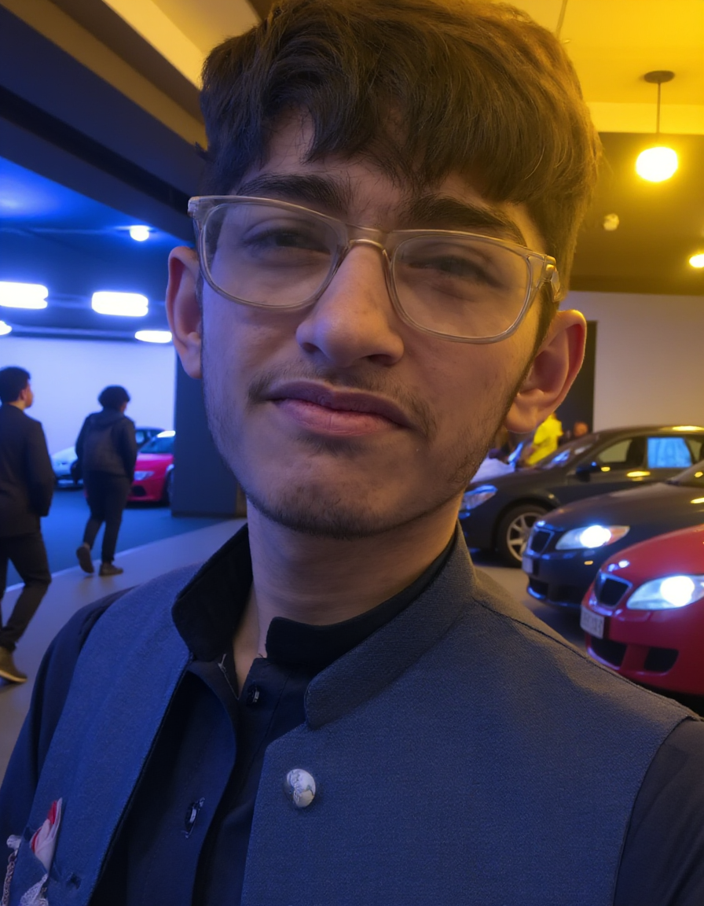

Ahmed Hassan

Summary
Motivated to grow as a developer and contribute to the real-wolrd projects while continuing to learn and improve myself.
Education
- Metriculation (Computer Science)- XYZ School
- Year of Completion: 2024
- Grade: A/92%
Work Experience
-
Content Creator - Kids Channel
More than 6 Months
- Created and managed a YouTube channel focused on sleep music and soothing content for kids
- Used tools like canva,lenardo.ai for creative visuals
- Learned about YouTube SEO, keywords, and audience engagement
- Used tools like vidiq for the SEO
- Achieved over 100,000 views and built a growing audience within a few months
Skills
- Youtube SEO⭐⭐⭐
- Thumbail Desiging⭐⭐
- Electronics Repair (Self-taught)⭐⭐
Awards
I didn't get any offical awards.
Other Achivements
- Monetized a Kids YT Channel
- Secured 1st Position in school in the academic year 2023
- Repaired small electronic gadgets like headphones, mobile chargers, and audio jacks
Projects
- Flappy Square Named 2d endless game on scratch platform. Click here to play
- Also created some mini fun games on scratch which you can play by visiting my profile
- Designed My Custom USB Mouse Circuit Diagram. Click here to see
- Inventory Managment System using Python.
- Sorthing Algorithm Code in Python
- Builded my first protfolio using only html. Click here to visit!
Others